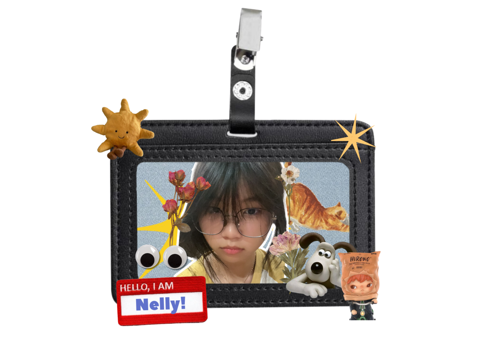

About Me
I'm Nelly So Putri, I'm a student at Santa Laurensia Junior High School and I really love graphic design and art. I'm an 8th grader and my birthday is 23rd August 2011, making me 13 years old. I live in Tangerang, Banten, Indonesia. I also enjoy playing games and reading books in my free time.
- 🌍 Home: Tangerang
- 🎮 Hobby: Reading and playing games
- 🎂 Birthday: 23 August 2011
- 💡 Skill: Graphic design & Art